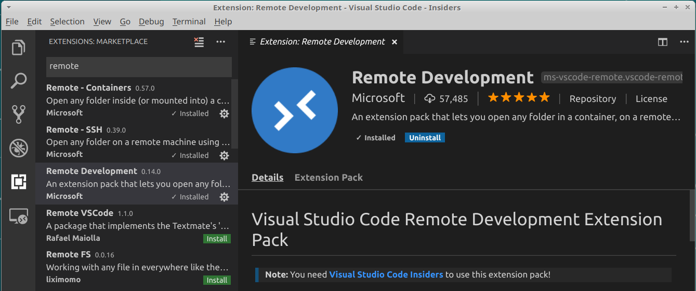
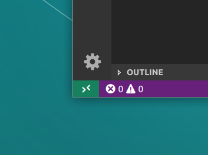

What is the new Visual Studio Code Remote feature and how to use it

Visual Studio Code just launched one of the most interesting features ever in a code editor: the option to install it on a server and access all your files remotely, using all your plugins and tools from your normal editor. I’ve already used it to edit some configuration and environment files on a couple servers and the experiences is awesome. In this post, I’ll explain how to install it using SSH and why it is convenient.
For now, you will need to download the insiders version of VS Code in order to use the feature. Once you have it installed on your computer, go to the extensions section from the side bar and look for “Remote Development”. This extension pack will install everything you need in order to use all the possible ways of connection. After downloading everything, you will see the “Open remote window” button in the left bottom corner of the screen.
Now, we have three ways for connecting to a remote server using the extension:
- SSH: use the all well loved protocol to connect to remote servers.
- Containers: connect to servers in a containered environment. Very useful if you already develop / deploy using Docker and want to use the feature on containers.
- WSL: get a Linux development environment inside of a Windows machine using the Windows Subsystem for Linux.
I will focus on the SSH one, since is the easier to get rolling and you won’t need to change or install anything extra. You just need an SSH client (which all Linux and Mac already have, and is very easy to install on Windows) and an authentication key. You can create that key by typing
ssh-keygen -t rsa -b 4096
This will ask you to enter the file location for the key. I will use the default one, but you can change it in order to make one file for each server key. It goes like:
Enter file in which to save the key (/home/chuik/.ssh/id_rsa):
Enter passphrase (empty for no passphrase):
Enter same passphrase again:
Your identification has been saved in id_rsa.
Your public key has been saved in id_rsa.pub.
The key fingerprint is:
SHA256:v/YyFE2yVvnbj83BQncNydgiTFAkvqxP4jveDsrm9Lc chuik@chuik-xps
The key's randomart image is:
Now, you will need to copy your key with your cedentials on to the server. You can do it with ssh-copy-id your-username@your-server-host-or-ip. In my case, it was something like:
$ ssh-copy-id jinchuika@10.10.10.248
jinchuika@10.10.10.248's password: <--- TYPE YOUR PASSWORD WHEN ASKED
Number of key(s) added: 1
Now try logging into the machine, with: "ssh 'jinchuika@10.10.10.248'"
and check to make sure that only the key(s) you wanted were added.
You should be able to connect to the server using SSH, without having to enter your password. Back to VS Code, click on the “Open a remote window” button in the bottom left corner of the window and select “Remote-SSH: Connect to Host”. Since you will probably won’t have any previous host configured (or even if you already have), let’s select Configure SSH Hosts... to create a new one. For the configuration, I used the default file since it’s alrerady there and I don’t want to be messing up with more config files.
In the configuration file, enter a new register for the host you’re connecting to. For example, in my case it was:
Host MyServer
HostName 10.10.10.248
User jinchuika
And that’s it! Now you should be able to connect to your server using VS Code remote. This will let you use stuff like autocomplete, managing folders and files, code linting and all the normal features from VS Code.